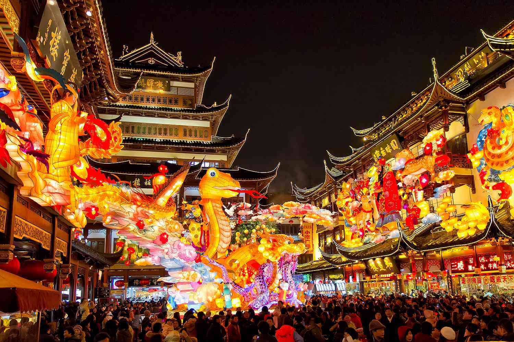
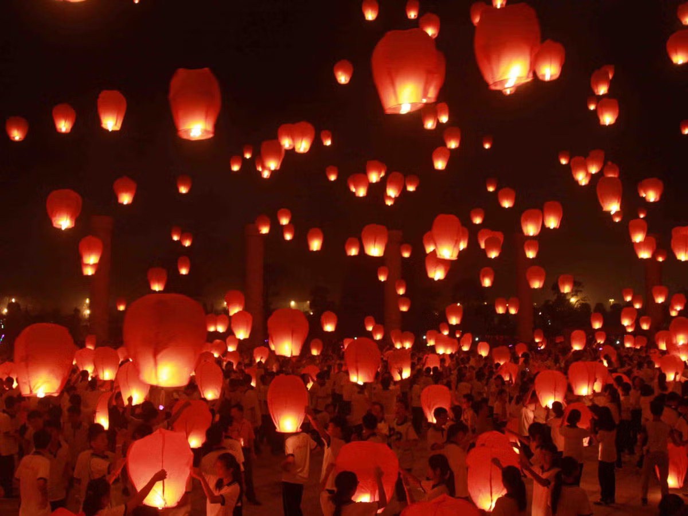
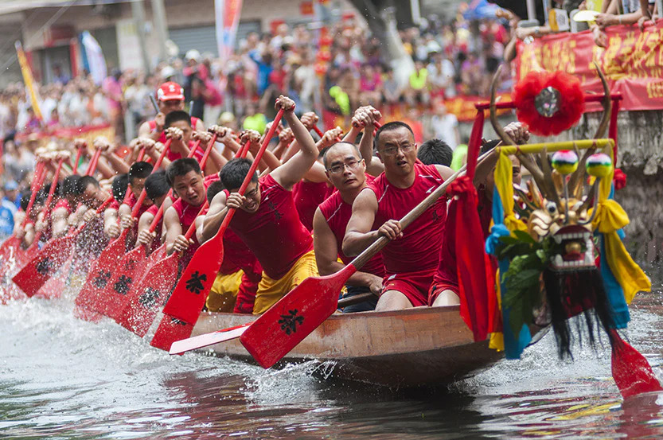
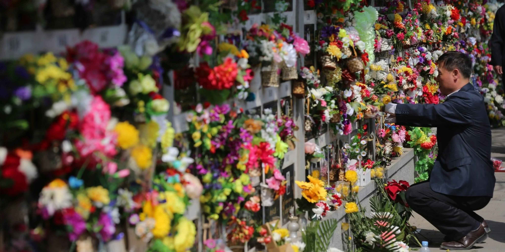

1. Chinese New Year/Spring Festival
Chinese New Year, also known as the Spring Festival, is the most important traditional festival in China. It usually falls between January and February and is celebrated with family reunions, fireworks, dragon and lion dances, and the famous red envelopes (hongbao). Each year is associated with one of the 12 zodiac animals, each symbolizing different characteristics. The celebrations last up to 15 days, culminating in the Lantern Festival, where people light colorful lanterns to symbolize letting go of the old and welcoming in the new.
2. Mid-Autumn Festival
The Mid-Autumn Festival, celebrated on the 15th day of the 8th lunar month, is a time for family reunions and moon-gazing. People share mooncakes, which are round pastries filled with various sweet fillings, symbolizing completeness and unity. Lanterns are also commonly displayed during the festivities.
Traditionally, the festival celebrates the harvest, and its origins are linked to the ancient worship of the moon. In some regions, children parade with lanterns in the shape of animals or flowers to honor the harvest moon.
3. Dragon Boat Festival
Held on the 5th day of the 5th lunar month, the Dragon Boat Festival is famous for its exciting dragon boat races and the tradition of eating zongzi (rice dumplings wrapped in bamboo leaves). The festival commemorates the life and death of the famous Chinese poet Qu Yuan, who drowned himself in protest against corruption. People throw zongzi into the water to distract fish from his body. The festival is also known for its use of protective herbs, which are believed to ward off evil spirits and diseases.
4. Qingming Festival
The Qingming Festival, also known as Tomb Sweeping Day, is a time to honor ancestors by visiting their graves and offering food, tea, and other items. It usually occurs on April 4th or 5th and is a solemn occasion to show respect for the deceased. The festival is rooted in ancient traditions, where families cleaned tombstones and made offerings to ensure good fortune and peace for the spirits of their ancestors. In modern times, it has become an occasion for people to enjoy outdoor activities, including hiking and flying kites, as a way to symbolize letting go of past burdens.